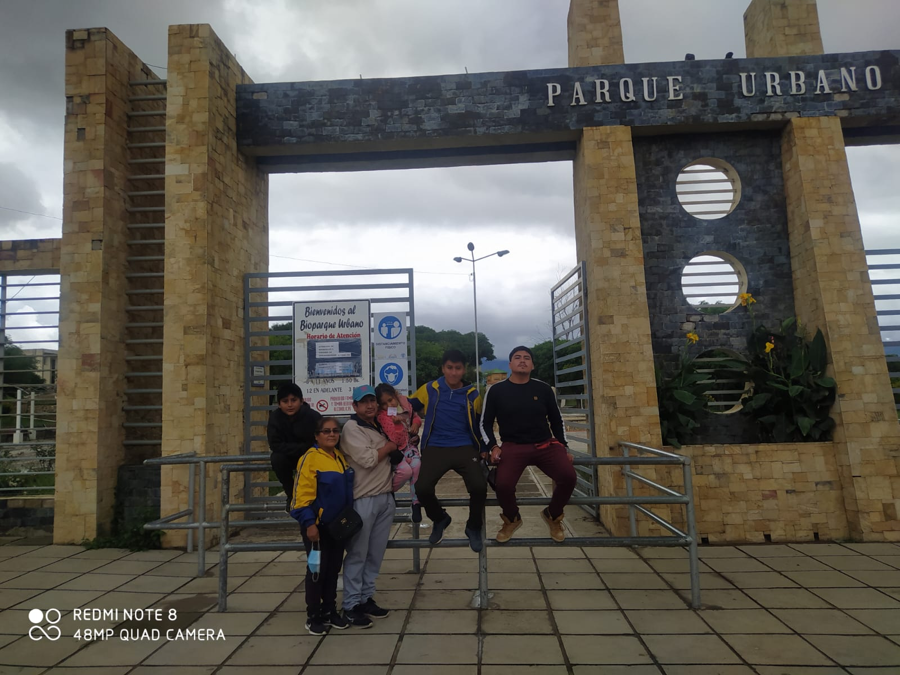

Mi Familia

Mis Padres
- Mi Padre
- Se llama Oscar Gallardo Flores, tiene actualmente 52 años y trabaja como maestro en colegios de secundaria como docente de matemáticas. Le gusta jugar al fútbol, cocinar y aprender constantemente para enseñar mejor a sus alumnos.
- Mi Madre
- Se llama Teresa Laura Sarzuri y tiene 50 años. Trabaja de maestra en una escuela primaria impartiendo varias áreas. Le gusta ver telenovelas, tener todo ordenado y le encanta pasar tiempo de calidad en familia.
Mis hermanos
- Fernando Oscar Gallardo Laura: Es mi hermano mayor, tiene 25 años. Le gusta mucho la limpieza, jugar fútbol y ayudar a sus hermanos menores en todo lo posible. Actualmente estudia la carrera de Administración de Empresas.
- Jose Ignacio Gallardo Laura: Es mi hermano gemelo, tiene 20 años. Le gusta trabajar mucho, es apasionado por jugar al voleibol y siempre nos apoyamos mutuamente.
- Magabi: Es mi hermanita menor, tiene 10 años. Le gusta mucho jugar con sus amigos, practicar baloncesto y es la alegría de la casa.
Mi Abuela
- Abuela Materna
- Mi abuela se llama Paulina Sarzuri y tiene 75 años de edad. Se dedica a la compra y venta de ropa nueva y siempre está dispuesta a ayudar incondicionalmente a toda la familia.
Pasatiempos Familiares

Cuando estamos juntos en vacaciones, disfrutamos de compartir comidas familiares, viajar en vacaciones y ponernos al día. A nivel personal, dedico tiempo al ajedrez y al voleibol, disciplinas que practico desde pequeño.